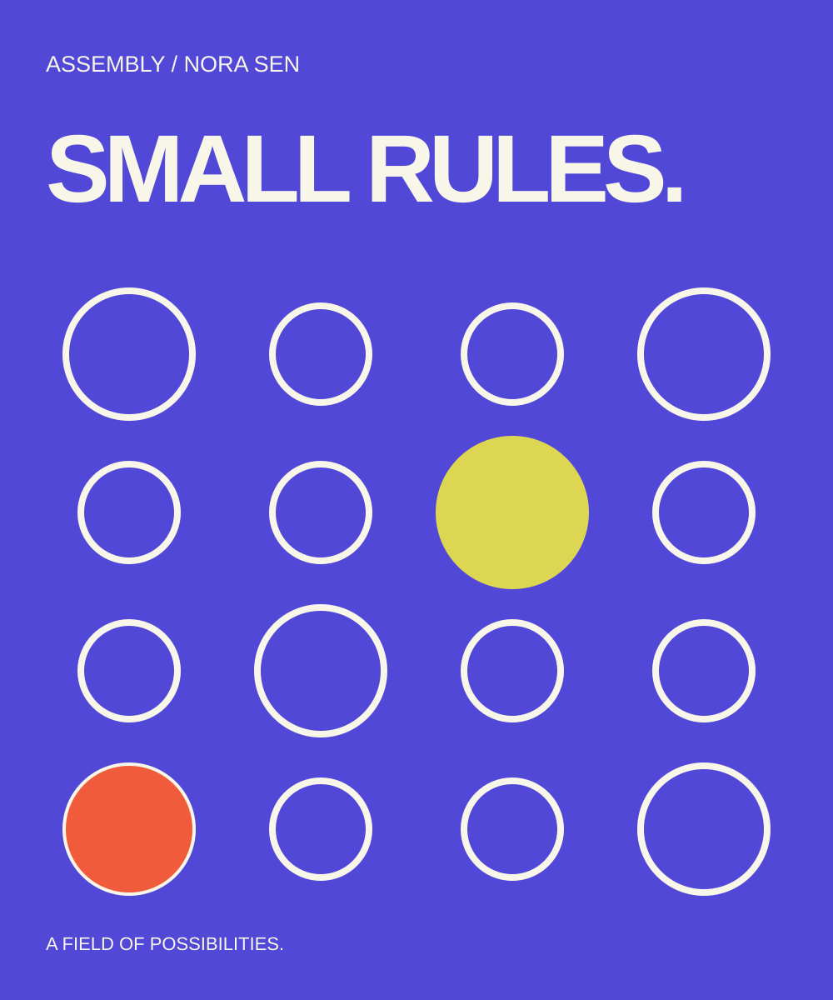

Thursday 20 May11:30–12:15Forum / UTC
Ideas / Talk
Small rules, unexpected forms
What a simple generative system can teach us about control, variation, and choosing when to stop.
Nora Sen ↗A constraint can be a place to begin.

Nora Sen is a fictional creative coder and visual artist exploring systems that produce unexpected forms. Her work in the Assembly concept connects simple geometric instructions with questions about authorship, variation, and deliberate choice.
The interesting part of a generative system is not how many images it can make. It is the relationship between its rules and the decisions a person makes around them. Nora’s sessions focus on readable systems: small enough to understand, open enough to surprise.
This profile is an original conference concept. The speaker, practice, sessions, and project are fictional; no real professional biography or client work is implied.
A field of possibilities is an original geometric poster series created for Assembly. Repeated circular forms are interrupted by a small number of changes in position and scale. A limited palette makes those changes easy to see and compare.
The artwork uses a deliberately limited vocabulary. Its character comes from proportion, scale, and the relationship between elements. The same idea can become a poster, a session title, or a practical exercise without losing its point of view.
Leave with a small set of constraints you can adapt into your own visual experiments, with no coding experience required.
The talks are designed to open a question, and the workshops turn that question into an exercise. Bring a notebook, a pencil, and a willingness to test a direction before deciding whether it is right. Specialist tools are not part of the premise.
A personal itinerary helps you choose where to spend your attention. Workshops run alongside some talks, so review any flagged overlaps before you export your plan. Saving a session in this demo does not reserve a seat.
What a simple generative system can teach us about control, variation, and choosing when to stop.
Nora Sen ↗All three fictional speakers discuss the role of incomplete ideas, rough work, and useful uncertainty.
All speakers ↗Make a family of visual compositions from a short set of rules. No coding knowledge required.
Nora Sen ↗Why editing, context, and intention matter as much as the rules that generate a form.
Nora Sen ↗